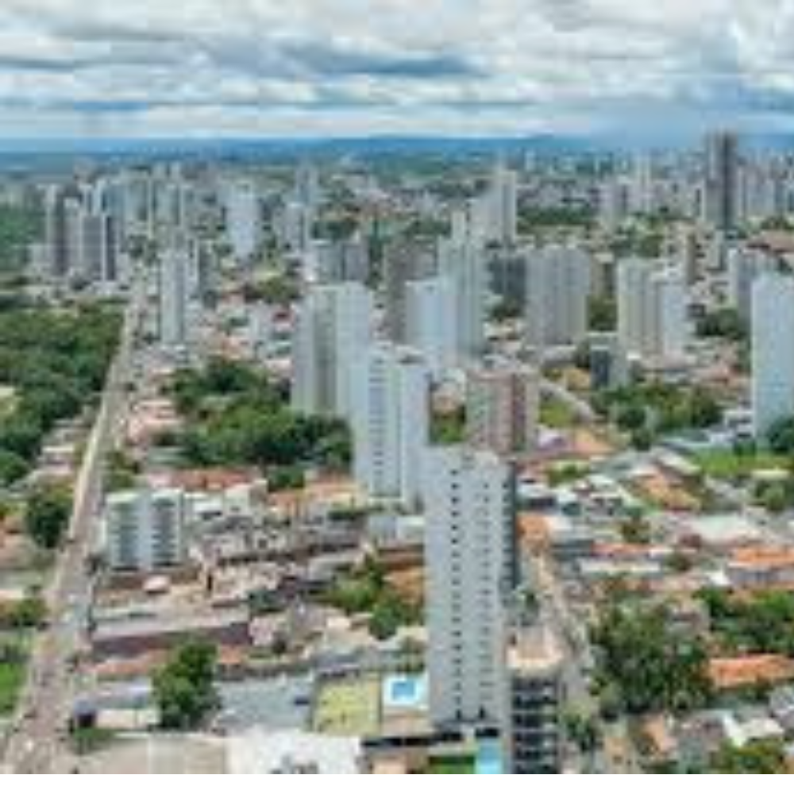

Voltar >
Mato Grosso é um dos lugares com maior volume de água doce no mundo. Mato Grosso tem 903.357,908 km2 de extensão. É o terceiro maior estado do país, ficando atrás somente do Amazonas e do Pará. A área urbana de Mato Grosso é de 519,7 km2, o que coloca o estado em 11º lugar nos ranking de estados com maior mancha urbana

Voltar